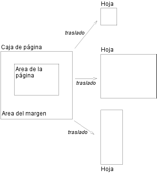

Contenidos
Los medios paginados (por ej., papel, transparencias, páginas que son mostradas en la pantalla de la computadora, etc.) se diferencian de los medios contínuos en que el contenido del documento se divide en una o más páginas discretas. Para manejar los saltos de página, CSS2 extiende el modelo de formato visual del siguiente modo:
El modelo de página de CSS2 especifica cómo es el formato de un documento dentro de un área rectangular --la caja de página-- que tiene una ancho y una altura finitos. La caja de página no necesariamente corresponde a la hoja donde el documento será procesado finalmente (papel, transparencia, pantalla, etc.). El modelo de página de CSS especifica el formato en la caja de página, pero es responsabilidad de la aplicación del usuario transferir la caja de página a la hoja. Algunas posibilidades de transferencia incluyen:
Aunque CSS2 no especifica el modo en que las aplicaciones del usuario transfieren las cajas de página a las hojas, incluye ciertos mecanismos para informar a las aplicaciones del usuario acerca del tamaño y orientación de la hoja de destino.
La caja de página es una región rectangular que contiene dos áreas:
Nota. En CSS2, las propiedades del borde y las propiedades del relleno no se aplican a las páginas; puede suceder en el futuro.
Los autores especifican las dimensiones, orientación, márgenes, etc. de una caja de página dentro de una regla @page. Una regla @page consiste en una palabra clave "@page", un selector de página (seguido con ningún espacio intermedio por una pseudo-clase de página opcional) y un bloque de declaraciones (hechas para el contexto de página).
El selector de página especifica a qué páginas se aplican las declaraciones. En CSS2, los selectores de páginas pueden indicar la primer página, todas las páginas izquierdas, todas las páginas derechas, o una página con un nombre específico.
Las dimensiones de la caja de la página son fijadas con la propiedad 'size'. Las dimensiones del área de la página son las dimensiones de la caja de página menos el área del margen.
Por ejemplo, la siguiente regla @page fija el tamaño de la caja de página en 8.5 x 11 pulgadas y crea un margen de '2cm' en cada lado entre el borde de la caja de página y el área de la página:
@page { size 8.5in 11in; margin: 2cm }
Las propiedades del margen ('margin-top', 'margin-right', 'margin-bottom', 'margin-left' y 'margin') se aplican en el contexto de página. El siguiente diagrama ilustra la relación entre la hoja, la caja de página y los márgenes de la página:
 [D]
El valor computado de los márgenes de la caja encima y abajo del área de la página es '0'.
El contexto de página no posee ninguna noción de fuentes, de modo que las unidades 'em' y 'ex' no están permitidas. Los valores de porcentajes en las propiedades del margen son relativas a las dimensiones de la caja de página; para los márgenes izquierdo y derecho, se refieren al ancho de la caja de página mientras que para los márgenes superior e inferior, se refieren a la altura de la caja de página. Todas las demás unidades asociadas con las respectivas propiedades de CSS2 están permitidas.
Como consecuencia de valores negativos para el margen (ya sea en la caja de página o en los elementos) o del posicionamiento absoluto el contenido puede terminar fuera de la caja de página, pero este contenido puede ser "cortado" --por la aplicación del usuario, la impresora, o finalmente, por la guillotina--.
Esta propiedad especifica el tamaño y orientación de una caja de página.
El tamaño de una caja de página puede ser "absoluto" (tamaño fijo) o "relativo" (escalable, es decir, ajustado a los tamaños de hoja disponibles). Las cajas de página relativas permiten a las aplicaciones del usuario escalar un documento y hacer un uso óptimo del tamaño final.
Tres valores de la propiedad 'size' crean una caja de página relativa:
En el ejemplo siguiente, los bordes exteriores de una caja de página se alinearán con el destino. El valor de porcentaje en la propiedad 'margin' es relativo al tamaño del destino por lo que si las dimensiones de la hoja de destino son 21.0cm x 29.7cm (es decir, A4), los márgenes son 2.10cm y 2.97cm.
@page {
size: auto; /* auto es el valor inicial */
margin: 10%;
}
Los valores de medida para la propiedad 'size' crean una caja de página absoluta. Si sólo se especifica un valor de medida, determina tanto el ancho como el alto de la caja de página (es decir, la caja es un cuadrado). Como la caja de página es el bloque de contención inicial, los valores de porcentaje no están permitidos para la propiedad 'size'.
Por ejemplo:
@page {
size: 8.5in 11in; /* ancho altura */
}
El ejemplo de arriba determina que el ancho de la caja de página sea de 8.5 pulgadas y la altura de 11 pulgadas. La caja de página en este ejemplo requiere de un tamaño de hoja de destino de 8.5"x11" o mayor.
Las aplicaciones del usuario pueden permitir a los usuarios controlar el traslado de la caja de página a la hoja (por ej., rotando una caja de página absoluta que está siendo impresa).
Si una caja de página no se ajusta a las dimensiones de la hoja de destino, la aplicación del usuario puede decidir:
La aplicación del usuario debe consultar al usuario antes de efectuar estas operaciones.
Cuando la caja de página es menor que el tamaño del destino, la aplicación del usuario es libre de ubicar la caja de página en cualquier lugar de la hoja. Sin embargo, se recomienda que la caja de página sea centrada en la hoja porque así se alinearán las páginas de doble faz y se evitará la pérdida accidental de información que es impresa cerca del borde de la hoja.
En las impresoras de alta calidad, a menudo se agregan marcas fuera de la caja de página. Esta propiedad especifica si se deben procesar las marcas de corte o marcas de registro o ambas justo fuera de los bordes de la caja de página.
Las crop marks (marcas de corte) indican dónde debe cortarse la página. Las cross marks (marcas de registro, también llamadas marcas de registración) se usan para alinear las hojas.
Las marcas son visibles sólo en las cajas de página absolutas (ver la propiedad 'size'). En las cajas de página relativas, la caja de página será alineada con el destino y las marcas quedarán fuera del área de impresión.
El tamaño, estilo y posición de las marcas de registro depende de la aplicación del usuario.
Cuando se imprimen documento en doble faz, las cajas de página en páginas izquierdas o derechas deberán ser diferentes. Esto puede expresarse por medio de dos pseudo-clases de CSS que pueden definirse en el contexto de página.
Todas las páginas son automáticamente clasificadas por las aplicaciones del usuario en la pseudo-clase :left o :right.
@page :left {
margin-left: 4cm;
margin-right: 3cm;
}
@page :right {
margin-left: 3cm;
margin-right: 4cm;
}
Si se hacen declaraciones diferenciadas para las páginas izquierda y derecha, la aplicación del usuario debe respetar estas declaraciones aún cuando la aplicación del usuario no traslade las cajas de página a hojas izquierda y derecha (ej., una impresora que sólo imprime una cara).
Los autores también pueden especificar un estilo para la primer página de un documento con la pseudo-clase :first:
@page { margin: 2cm } /* Todos los márgenes fijados en 2cm */
@page :first {
margin-top: 10cm /* Margen superior de la primer página de 10cm */
}
Si la primer página de un documento es :left o :right depende de la dirección de escritura principal del documento y está fuera del alcance de este documento. Sin embargo, para forzar una primer página :left o :right, los autores pueden insertar un salto de página antes de la primer caja generada (por ej., en HTML, especificando esto para el elemento BODY).
Las propiedades especificadas en una regla @page :left (o :right) reemplaza las especificadas en una regla @page que no tiene especificada una pseudo-clase. Las propiedades especificadas en una regla @page :first reemplaza las especificadas en las reglas @page :left (o :right).
Nota. Agregar declaraciones a las pseudo-clases :left o :right no influye si el documento sale impreso en una o en ambas caras (lo que está fuera del alcance de esta especificación).
Nota. Las futuras versiones de CSS pueden incluir otras pseudo-clases de página.
Al estructura el contenido en un modelo de página, parte del contenido puede acabar fuera de la caja de página. Por ejemplo, un elemento cuya propiedad 'white-space' tiene el valor 'pre' puede generar una caja que sea más ancha que la caja de página. También, cuando las cajas son posicionadas absolutamente, pueden finalizar en ubicaciones "inconvenientes". Por ejemplo, las imágenes puede ubicarse sobre el borde de la caja de página o 100.000 pulgadas abajo de la caja de página.
Una especificación del formato exacto de tales elementos queda fuera del alcance de este documento. Sin embargo, recomendamos que los autores y las aplicaciones del usuario observen los siguientes principios generales concernientes al contenido fuera de la caja de página:
Las siguientes secciones explican el formato de página en CSS2. Cinco propiedades indican dónde debe o puede la aplicación del usuario producir los saltos de página, y en qué página (izquierda o derecha) debe continuar el contenido subsecuente. Cada salto de página finaliza la composición de la caja de página actual y provoca que las partes que restan de la estructura del documento sean colocadas en una nueva caja de página.
| Valor: | auto | always | avoid | left | right | inherit |
| Inicial: | auto |
| Se aplica a: | los elementos a nivel de bloque |
| Se hereda: | no |
| Porcentajes: | N/A |
| Media: | visual, paged |
| Valor: | auto | always | avoid | left | right | inherit |
| Inicial: | auto |
| Se aplica a: | los elementos a nivel de bloque |
| Se hereda: | no |
| Porcentajes: | N/A |
| Medios: | visuales, paginados |
| Valor: | avoid | auto | inherit |
| Inicial: | auto |
| Se aplica a: | los elementos a nivel de bloque |
| Se hereda: | si |
| Porcentajes: | N/A |
| Medios: | visuales, paginados |
Los valores para estas propiedades tienen los siguientes significados:
Una ubicación potencial de un salto de línea está típicamente bajo la influencia de la propiedad 'page-break-inside' del elemento padre, la propiedad 'page-break-after' del elemento precedente y la propiedad 'page-break-before' del elemento siguiente. Cuando estas propiedades tienen valores distintos que 'auto', los valores 'always', 'left' y 'right' tienen prioridad sobre 'avoid'. Ver la sección sobre saltos de página permitidos por las reglas exactas sobre cómo estas propiedades pueden forzar o suprimir un salto de página.
| Valor: | <identificador> | auto |
| Inicial: | auto |
| Se aplica a: | los elementos a nivel de bloque |
| Se hereda: | si |
| Porcentajes: | N/A |
| Medios: | visuales, paginados |
La propiedad 'page' puede utilizarse para especificar un tipo particular de página donde un elemento debe ser visualizado.
Este ejemplo pondrá a todas las tablas en páginas de la derecha apaisadas (llamadas "rotadas"):
@page rotadas {size: landscape}
TABLE {page: rotadas; page-break-before: right}
La propiedad 'page' trabaja del siguiente modo: Si una caja de bloque con contenido a nivel de línea tiene una propiedad 'page' distinta a la caja de bloque con contenido a nivel de línea precedente, entonces se insertan uno o dos saltos de página entre ellas, y las cajas después del salto son procesadas en una caja de página del tipo nombrado. Ver "Saltos de página forzados" más abajo.
En este ejemplo, las dos tablas son procesadas en páginas apaisadas (de hecho, en la misma página, si caben) y el tipo de página "angosta" no se usa en absoluto, a pesar de haber sido puestas en el DIV:
@page angosta {size: 9cm 18cm}
@page rotada {size: landscape}
DIV {page: angosta}
TABLE {page: rotada}
con este documento:
<DIV> <TABLE>...</TABLE> <TABLE>...</TABLE> </DIV>
La propiedad 'orphans' especifica el número mínimo de líneas de un párrafo que deben dejarse al final de una página. La propiedad 'widows' especifica el número mínimo de líneas de un párrafo que deben dejarse al comienzo de una página. Los ejemplos de cómo se usan para controlar los saltos de página se dan abajo.
|
Nota de la traducción: "Orphans" y "widows" significan literalmente "huérfanas" y "viudas" (en femenino porque se refieren a las líneas de un párrafo) y en castellano estas mismas palabras se utilizan en igual sentido. |
Por información acerca del formato de los párrafos, por favor consulte la sección sobre cajas de línea.
En el flujo normal, los saltos de página pueden producirse en los siguientes lugares:
Estos saltos están sujetos a las siguientes reglas:
Si lo anterior no proporciona suficientes puntos de ruptura para mantener al contenido fluyendo entre las cajas de página, entonces las reglas B y D se abandonan para encontrar puntos adicionales para los saltos.
Si eso aún no conduce a una cantidad de puntos de ruptura suficientes, las reglas A y B son también abandonadas, para encontrar todavía más puntos para los saltos.
Los saltos de página no pueden producirse dentro de las cajas que están posicionadas absolutamente.
Un salto de página debe producirse en (1) if, entre las propiedades 'page-break-after' y 'page-break-before' de todas las cajas generadas de los elementos que se juntan en este margen, hay al menos una con el valor de 'always', 'left' o 'right'.
Un salto de página debe producirse en (1) si la última caja de línea encima de este margen y la primera debajo del mismo no tienen el mismo valor para 'page'.
CSS2 no define cuál de todos el conjunto de saltos de página permitidos debe usarse; CSS2 no prohibe que la aplicación del usuario realice el salto en cada posible punto de corte, o que no lo haga en absoluto. Pero CSS2 recomienda que las aplicaciones del usuario observen las siguientes reglas heurísticas (en tanto reconoce que estas son a veces contradictorias):
Suponga, por ejemplo, que la hoja de estilo contiene 'orphans : 4', 'widows : 2', y hay 20 líneas (cajas de línea) disponibles al final de la página actual:
Ahora suponga que 'orphans' es '10', 'widows' es '20', y hay 8 líneas disponibles al final de la página actual:
Las declaraciones en el contexto de página obedecen el orden de cascada tanto como las declaraciones normales de CSS2.
Considere el siguiente ejemplo:
@page {
margin-left: 3cm;
}
@page :left {
margin-left: 4cm;
}
Debido a la mayor especificidad del selector de pseudo-clase, el margen izquierdo en las páginas de la izquierda será de '4cm' y todas las demás páginas (es decir, las páginas de la derecha) tendrán un margen izquierdo de '3cm'.
|
Copyright © 1998 W3C (MIT, INRIA, Keio ), All Rights Reserved.
Traducción: Carlos Benavidez |